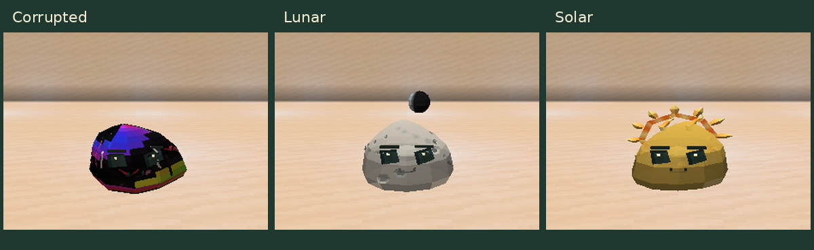

Materiais e detalhes dos slimes
Guia do mod · Galeria das espécies · Fases lunares

Corrupted
Uma película escura cobre o corpo, com manchas iridescentes que mudam de posição e se misturam suavemente. As fissuras vermelhas, rosas, brancas e negras continuam sobre a superfície. O efeito acompanha o movimento do gel.
Trecho da corrupção animada no jogo
Lunar
São 20 crateras distribuídas pelo topo, laterais e costas. Cada uma tem uma borda clara e um centro rebaixado e sombreado. A região dos olhos e da boca fica livre. A lua flutuante mantém a fase de cada indivíduo; confira as oito variantes e os comandos.
Solar
Os raios e a coroa completam uma volta em 9,6 segundos. Cada raio pulsa em um tempo próprio, enquanto a textura quente da coroa ondula. As chamas superiores continuam acompanhando o corpo.
Trecho do sol animado no jogo
Os GIFs mostram quatro capturas do mesmo indivíduo, separadas por dez ticks. Cada quadro é exibido por meio segundo e a sequência se repete para ilustrar o movimento. São recortes reais do jogo. A opção de movimento reduzido interrompe os novos movimentos decorativos.